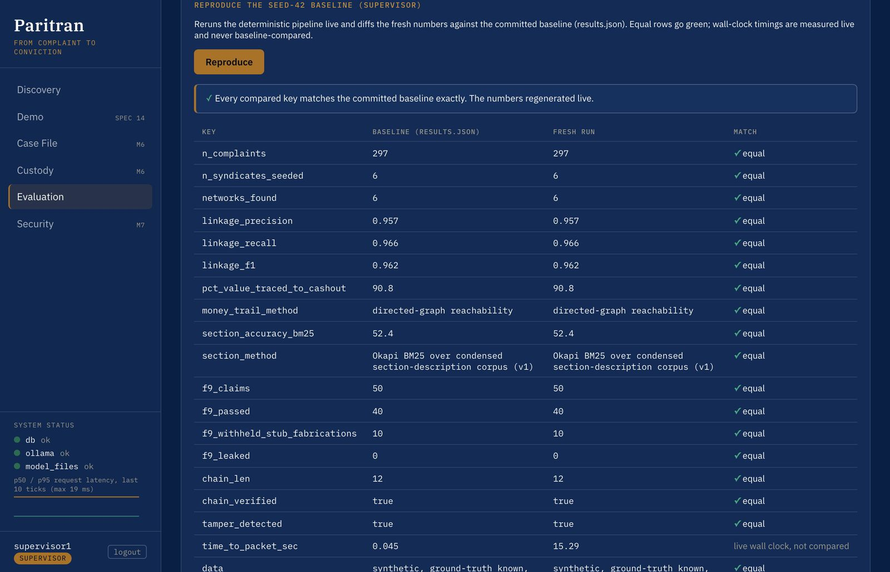
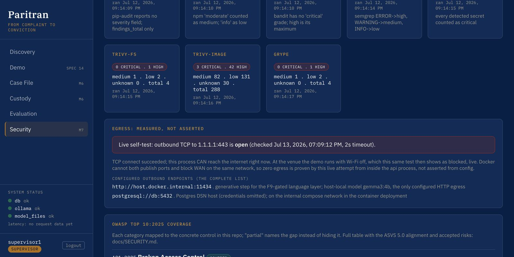
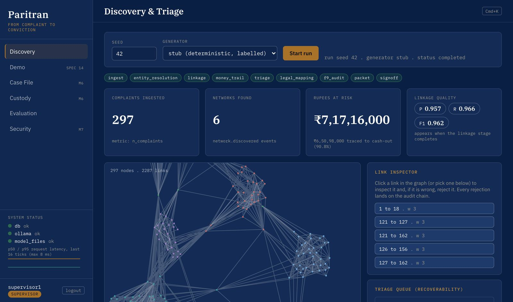
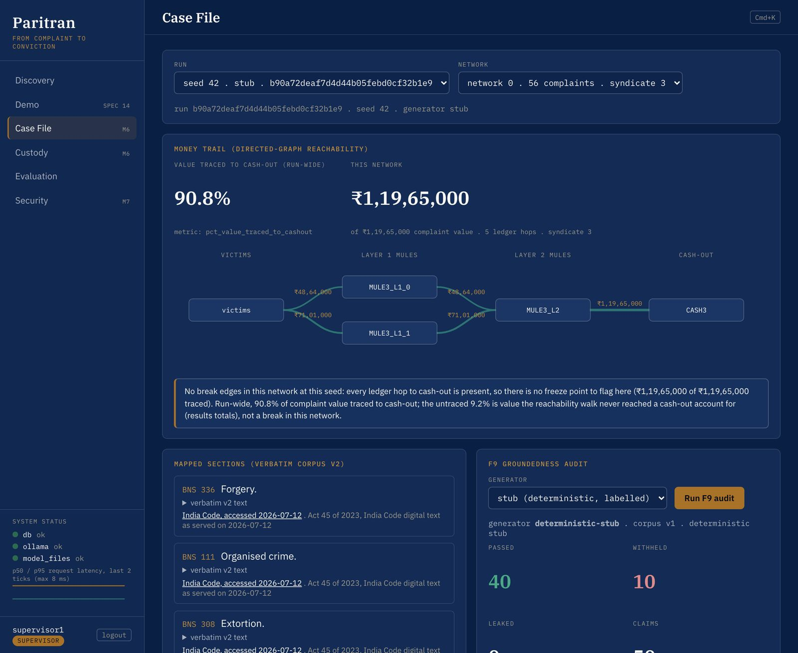
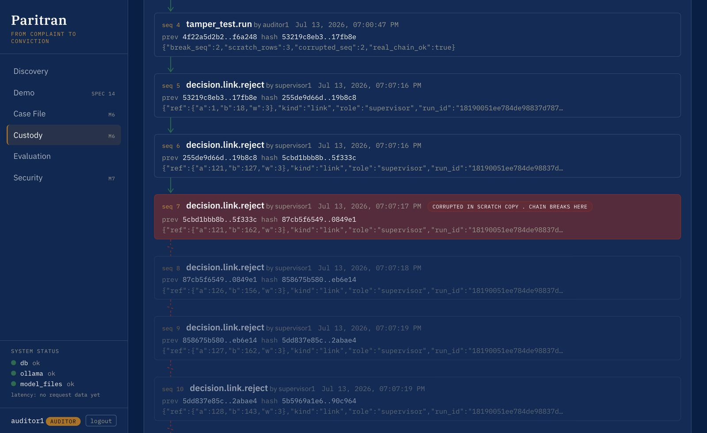

Paritran
Detection tools surface fraud. Paritran builds a reviewable case file on one machine, with every claimed result tied to its source.
The engine links complaints, follows the money, maps cited law, and preserves custody while the officer remains accountable.
Detection is crowded. Conviction is empty.
The national stack handles detection and freezing. Paritran addresses the next operational gap: joining related complaints, reconstructing the trail, binding citations, and preserving a reviewable custody record.
Watch it work
One button drives the recorded synthetic demonstration from intake through linkage, money trail, grounded drafting, and custody verification.
REPLAY: recorded from a real seed-42 run. Full-screen version and the chaptered tour: demo.html. Run the real engine yourself in the interactive walkthrough.
One deterministic core, a fenced language layer
Linkage, money trail, scoring and custody are graph and rule based, so the same input gives the same output every time. The model only summarises cited evidence and drafts documents, and every draft passes the groundedness gate. A SHA-256 chain of custody runs under every stage.
Hover or tap a stage for the plain-English version. Descriptive, no measured claims.
297 complaints walk in. 6 criminal networks walk out.
Text equivalent: 297 complaint dots stream in and cluster into 6 colored networks, matching the 6 planted syndicates.
REAL, results.json seed 42, measured against known ground truth.
The data is synthetic with the answers planted, like a test where the teacher already knows the answer key. That is the only honest way to grade yourself: we know exactly which 6 gangs we hid, so we can check the engine found exactly those 6.
90.8% of the stolen value traced to cash-out
REPLAY: real seed-42 money-ledger reachability for one network. REAL: 90.8% traced overall, results.json.
Follow the marked bill hop by hop from victims through mule accounts to cash-out. The remaining untraced value stays visible rather than being silently treated as recovered.
Networks are ranked by how much money is still freezable, using a four-term formula shown next to the score. Accounts are scored, never people.
The law, quoted not guessed
Three independent methods must agree before Paritran calls a legal section HIGH confidence. On agreed cases, measured accuracy is 100.0% (8/8 and 15/15).
REAL, frozen benchmark receipts governed by the solution dossier.
52.4 = plain keyword search alone, our honest floor.
100% (8/8 and 15/15) = when all three methods agree, it has not been wrong in our tests.
The high-confidence result applies only to the measured agreement subset. When the three paths disagree, the case routes to a human officer.
Every quoted section is the official India Code text, committed with checksums, and a unit test proves every displayed quote appears verbatim in the statute file. The law it quotes is the real law book, and a test refuses to let it print a quote that is not in the book.
The gate that catches lies
Every AI-drafted citation is checked word for word against the statute. Invented ones never leave the building.
We say "stub fabrications" and "ungrounded (withheld) claims". We never use looser words for it.
The diary that cannot be edited
Append-only, hash-chained, enforced by the database itself. A Postgres trigger assigns the sequence, timestamp, and SHA-256 chain hashes under a lock; updates and deletes are rejected at the database level; the chain head is anchored outside the database as a Prometheus metric.
A diary where every page ends with a fingerprint of everything before it. Change one word and every downstream fingerprint stops matching. The product ledger is verified and tamper-evident. A privileged rewrite of the whole chain remains outside an internal hash chain's guarantee, so the chain head is anchored out of band.
Nothing is canned. Pick any seed.
Every number moves when the seed changes. No hardcoded value survives that. This page is static; the live seed rerun runs the real engine on your own device in the interactive walkthrough.
Run it yourself, live, in your browserJudge's seed
Type any seed and the full engine reruns; every network number moves consistently. Live in the walkthrough, screenshot here.
One-click Reproduce
Reruns seed 42 and diffs every fresh number against the committed results.json, all rows green when they match. REPLAY / screenshot; live reproduction in the walkthrough.
Standalone prototype
A compact Python entry point reproduces the canonical synthetic metrics. Run it on a copy so the frozen results.json is untouched. REAL, results.json seed 42.
CI gate
191 in-container tests, including a gate that fails the build if seed-42 metrics drift and a grep that fails if any metric is hardcoded in the frontend. INFRA.

A sealed room
Zero egress is measured live, not asserted. The API lists its complete outbound config (exactly one endpoint, host-local Ollama) and performs a real timestamped TCP connection attempt to the internet, shown blocked live when the demo Wi-Fi is off.
REAL: the egress self-test runs in the product; this diagram describes it.
Dependency, source, secret, and container scanners run as release gates; current residual risks are documented in SECURITY.md.
OWASP Top 10:2025 checklist mapped to concrete controls.
Role-based auth: officer, supervisor, auditor. Argon2id, per-role rate limits; only auditors can tamper-test, only supervisors can reproduce.
On-premise docker compose uses internal networks and an explicit set of host-facing ports.
The whole system lives in one sealed room. It does not just promise it never phones the internet. It picks up the phone in front of you and shows you the line is dead.

Everything in the box
Every listed capability is labelled by how it is computed. Filter by provenance.



Measured results
Every number is produced by the method named next to it, on synthetic ground-truth data with zero real PII, fixed seed 42, or measured live and logged. results.json is frozen; reproduce it with one command.
| Metric | Result | Method | Source |
|---|---|---|---|
| Mule networks recovered | 6 of 6 from 297 complaints | community detection vs planted ground truth | results.json seed 42 · REAL |
| Linkage precision / recall / F1 | 0.957 / 0.966 / 0.962 | pairwise vs known ground truth | results.json · REAL |
| Value traced to cash-out | 90.8% | directed-graph reachability | results.json · REAL |
| Section mapping floor | 52.4% | BM25 over condensed corpus v1, untuned lexical baseline | results.json · REAL |
| High-confidence mapping | 100.0% (8/8 and 15/15) | three-path agreement; all else routes to a human officer | FROZEN BENCHMARK · REAL |
| Groundedness gate (F9), stub baseline | 40 passed, 10 stub fabrications withheld, 0 leaked | verbatim-citation gate over a labelled deterministic stub | results.json · STUB |
| Groundedness gate (F9), live gemma | 5 passed, 1 withheld, 0 leaked | verbatim-citation gate over the local model output | FROZEN RUN · REAL |
| Chain of custody | verified and tamper-evident | SHA-256 hash chain | results.json · REAL |
| Rule-augmented NER | precision 0.74, recall 1.0 | planted Indian identifiers, pattern rules not a learned model | FROZEN BENCHMARK · REAL |
| Test suite | 191 tests passing | prototype build state recorded in the solution dossier | DOSSIER · INFRA |
Everyone builds detection. We build the part that ends in a conviction.
How it is built
- React + FastAPI + Postgres, InLegalBERT and a local Gemma, all on one machine via docker compose.
- A nine-stage deterministic pipeline with a fenced language layer; every drafted citation passes the F9 gate.
- A database-enforced, hash-chained audit ledger with the chain head anchored out of band.
- 191 tests passing in the recorded build state; dependency and source scanners gate publication.
Depth: the white paper and ARCHITECTURE.md.
Common questions
Is this just a GPT wrapper?
No. The core is deterministic graph and rule code; the model only drafts language, and every drafted citation passes the verbatim F9 gate (live: 5 passed, 1 withheld, 0 leaked).
Is the data real?
Fully synthetic with planted ground truth, zero real PII, seed 42. That is the only honest way to measure precision and recall against a known answer key.
Does it integrate with CCTNS or ICJS?
No live integration is claimed. An API-first seam is documented, and interface-specific integration remains TODO-VERIFY.
What stops an adversary editing the record?
The audit ledger is append-only and enforced by Postgres itself, the chain head is anchored outside the database, and we state plainly the one thing a hash chain cannot catch.
Why is there no hosted server to log into?
The product runs on-premise inside the Crime Branch by design. The interactive walkthrough runs the real engine on your own device with zero backend.
Are any numbers hardcoded?
Change the seed in the walkthrough and every network number moves; a CI grep fails the build if any metric is hardcoded in the frontend.
Ready to pilot with the Cyber Crime Branch
Ready for a scoped on-premise prototype pilot, with CCTNS and ICJS integration remaining interface-dependent and TODO-VERIFY. Built by Team Paritran: Ayush Tiwary and Aditya Arora. PS-69EEFE4F8CD1C, KANAD S.H.I.E.L.D. 2026, Category 2.
Contact Team Paritran